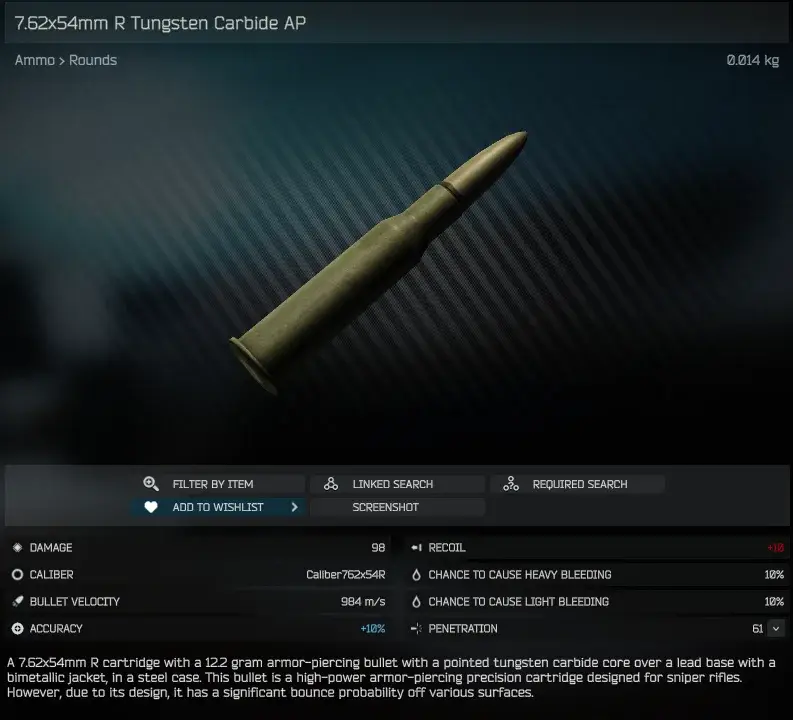
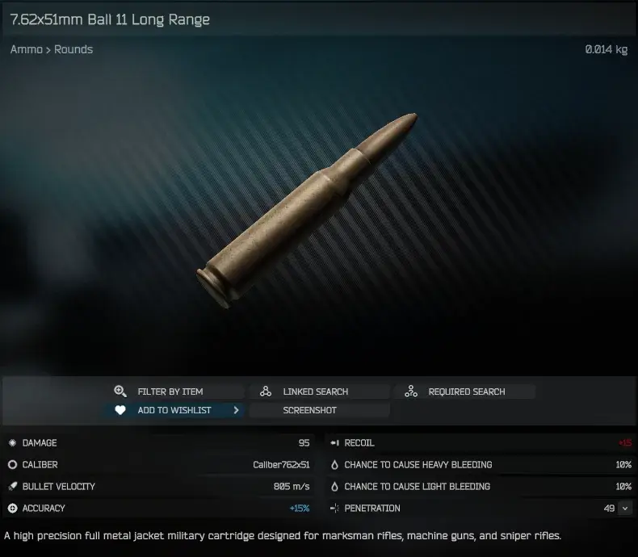

Arena Ammo Backport
- Downloads
- 3,202
- Favourites
- 7
- Mod lists
- 14
Hi! Been a minute; finally releasing stuff again.
Mod Contents
This mod adds the 2 unique rounds of ammo from EFT: Arena, those being 7.62x51mm Ball 11 Long Range and 7.62x54mm R Tungsten Carbine AP respectively. These rounds aren’t the most balanced things in the world since they were intended to just improve bolt actions in Arena, but oh well. Thanks for the idea to make this, Yshtvan!
By default, this ammo will be pushed out to all Bosses that utilize these ammo types, and this mod supports custom guns as long as they define the parent caliber in their slots.
Oh, also, this mod has locales made for English, Russian, and Chinese (Traditional) thanks to the wiki already having all of the naming data in those languages. feel free to make a PR if you want to translate the rest, though! ^^
Where do I get these rounds?
Gallery
You can buy these rounds at Peacekeeper or Prapor LL4 respectively: they aren’t cheap though.


Version
1.0.0
Initial release! :3